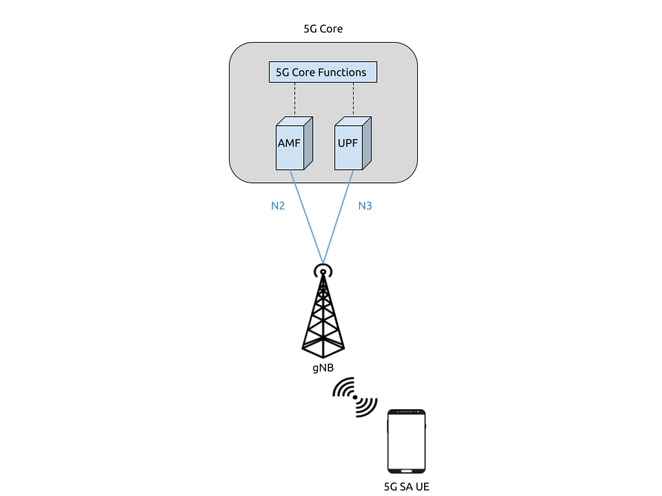

5G SA COTS UE
Tip
The srsENB supports prototype 5G features for both NSA and SA modes of operation however, these features are no longer under active development. Instead we recommend the srsRAN Project, our ORAN-native 5G CU/DU solution.
Warning
Operating a private 5G SA network on cellular frequency bands may be tightly regulated in your jurisdiction. Seek the approval of your telecommunications regulator before doing so.
srsRAN 4G 22.04 brings 5G SA support to both srsUE and srsENB. 5G SA features can be enabled via the configuration files of both srsUE and srsENB.
This application note demonstrates how to configure and connect a 5G capable COTS UE to a 5G SA network using srsRAN 4G and a 3rd-party core (Open5GS in this example).
Network & Hardware Overview

Setting up a 5G SA network and connecting a 5G COTS UE requires the following:
PC with a Linux based OS, with srsRAN 4G 22.04 (or later) installed and built
Third Party 5G Core
A compatible SDR (USRP, LimeSDR, BladeRF, etc.), ideally connected to a 10 MHz reference clock or GPSDO
A 5G SA-capable UE
USIM/ SIM card (This must be a test card or a programmable card, with known keys)
For this implementation the following equipment is used:
Dell XPS13 with Ubuntu 20.04 LTS
srsRAN 4G 22.04 & Open5GS
B200-mini USRP running over USB3
OnePlus Nord 5G with a Sysmocom USIM
UE Considerations
One of the current limitations of srsRAN 4G is that only 15 kHz sub-carrier spacing is supported. As a result, only devices that are capable of operating in bands that support FDD (e.g. band 3) can be used. Many commercial COTS UEs require 30 kHz SCS for TDD bands, which we do not currently support.
Besides the restrictions originating from the baseband hardware there are a few other pitfalls that may or may not allow a phone to connect to a 5G network:
On some handsets, when using a test USIM, you may need to activate 5G NR using
*#*#4636#*#*.If your handset supports “Smart 5G”, disable this option as it may force the handset to 4G and activate roaming.
Many 5G handsets may contain a carrier policy file that may limit 5G capabilities of the phone based on the PLMN of the USIM (first 6 digits of IMSI). Carrier policy files typically don’t include test network PLMNs, so setting a test PLMN may result in 5G being disabled. If possible, using a shielded box and configuring the network with a commercial carrier PLMN may avoid policy file issues.
Dependencies
RF Driver
To check that your RF driver has been picked up when running cmake .. during the build process, you can run:
grep <driver> srsRAN_4G/build/CMakeCache.txt
If you are using UHD as your driver, you should see the following output if srsRAN 4G has successfully detected it when cmake .. was run:
$ grep UHD -m 4 CMakeCache.txt
//Enable UHD
ENABLE_UHD:BOOL=ON
UHD_INCLUDE_DIRS:PATH=/usr/local/include
UHD_LIBRARIES:FILEPATH=/usr/local/lib/libuhd.so
We’ve only tested SA mode with Ettus Research devices using UHD. For this appnote we use the USRP B200-mini with UHD version v4.2.
To check that your RF driver has been picked up when running cmake .. during the build process, you can run:
grep <driver> srsRAN_4G/build/CMakeCache.txt
If you are using UHD as your driver, you should see the following output if srsRAN 4G has successfully detected it when cmake .. was run:
$ grep UHD -m 4 CMakeCache.txt
//Enable UHD
ENABLE_UHD:BOOL=ON
UHD_INCLUDE_DIRS:PATH=/usr/local/include
UHD_LIBRARIES:FILEPATH=/usr/local/lib/libuhd.so
srsRAN 4G
If you have not already done so, install the latest version of srsRAN 4G and all of its dependencies. This is outlined in the installation guide.
Note
If you install or update your driver after installing srsRAN 4G, you will have to re-build srsRAN 4G.
3rd Party Core - Open5GS
For this example we are using Open5GS as the 5G Core.
Open5GS is a C-language Open Source implementation for 5G Core and EPC. The following links will provide you with the information needed to download and set-up Open5GS so that it is ready to use with srsRAN 4G:
srsENB will connect to the AMF and UPF via the mme_addr config option in the srsENB config file.
Preparing COTS UE
Most COTS UEs will have no issues connecting to srsRAN 4G, and should work out of the box. In the case where you are having difficulties seeing, or connecting to the network, the following steps may need to be followed:
Correct configuration of the 5G USIM
Rooting the UE
Using Network Signal Guru to force the device to see the 5G cell
The following steps are not a requirement to run 5G SA, but may be necessary if you are having trouble connecting to the network.
5G SIM
If you are using a 5G-enabled sysmcom-ISIM then you will need to modify the 5G-related fields of the sim card. In particular you need to enable SUCI concealment. This can be done via a sim card reader using the following command (First, you need to add your ADM pin to ./scripts/deactivate-5g.script):
./pySim-shell.py -p0 --script ./scripts/deactivate-5g.script
You can find more information on this in this guide, written by Merlin Chlosta.
Rooting COTS UE
Rooting will allow you to run the Network Signal Guru (NSG) application. It also lets you configure system settings and grants access to additional features not allowed with standard use.
How this is done is dependent on the make and manufacturer of your device. XDA-Developers have a useful article which outlines how to root various COTS UE devices, you can find it here.
Warning
Rooting a device may cause you to lose any information stored on the device. It is not recommended to root your personal device. You should be careful to fully understand what you are doing before undertaking the process.
Network Signal Guru
Note
For NSG to work and force the connection to the 5G SA cell, your device must have a Qualcomm baseband processor and also be rooted.
You can download NSG from the Play Store at this link.
NSG will be used to force the COTS UE to use a specific RAT, in this case 5G SA. To do this take the following steps:
In the top right corner of the app, open the drop down menu by pressing the 3 dots.
Now select
Forcing Control.Under “Preferred Network Type” select only
5GNR.Under “NR5G” Mode select
SA.
To activate LTE and NSA, take the following steps:
Under “Preferred network type” select
5GNRandLTEUnder “NR5G” Mode select
NSA/SA
The rest of the settings should stay as they are, either not set or left in the default state. This is shown in the following screenshots.

{kind=link}
Once the network is up and running you should be able to select it from the application at select to. This will then force the UE to attach to it.
Configuration
The following config files were modified for this app note:
Note
22.04.1 brings changes to the rr.conf, coreset0_idx is now a required field under nr_nell_list. If you are using an old config file with the latest update, you will need to add this to your config file.
Details of the modifications made will be outlined in following sections.
srsENB
To configure srsENB to connect to both the 5GC and COTS UE, changes need to be made to:
enb.conf
rr.conf
enb.conf
Firstly, the MCC and MNC need to be changed to match those being used by Open5GS, the mme_addr also needs to be set to allow the RAN to connect to the AMF and UPF.
The following shows these modifications:
[enb]
enb_id = 0x19B
mcc = 901
mnc = 70
mme_addr = 127.0.0.2
gtp_bind_addr = 127.0.1.1
s1c_bind_addr = 127.0.1.1
s1c_bind_port = 0
n_prb = 50
#tm = 4
#nof_ports = 2
srsENB will automatically select the SDR that is connected, in this example it is the B200-mini USRP. Further configuration with specific device arguments is possible. For this example the following config was used:
[rf]
#dl_earfcn = 3350
tx_gain = 30
rx_gain = 40
device_name = auto
The tx and rx gain values can be adjusted here if the UE is unable to see or connect to the network. RF signal strength is subjective to various physical conditions associated with each use case and set up. As a result, the above config may not work perfectly for all users. Thus, their configuration should be modified as needed.
rr.conf
The rr.conf file needs to be modified to add the NR Cell to the cell list. The default LTE cells also need to be either commented out, or removed completely from the list. The NR Cell is configured in the following way:
nr_cell_list =
(
{
rf_port = 0;
cell_id = 1;
root_seq_idx = 1;
tac = 7;
pci = 500;
dl_arfcn = 368500;
coreset0_idx = 6;
band = 3;
}
);
In the attached example config the LTE cell list has simply been commented out. Although the list can also be removed, or left empty.
Core
As highlighted above, the Open5GS 5G Core Quickstart Guide provides a comprehensive overview of how to configure Open5GS to run as a 5G Core.
The main modifications needed are:
Change the TAC in the AMF config to 7
Check that the NGAP, and GTPU addresses are all correct. This is done in the AMF and UPF config files.
It is also a good idea to make sure the PLMN values are consistent across all of the above files and the UE config file.
The final step is to register the UE to the list of subscribers through the Open5GS WebUI. The values for each field should match the values associated with the USIM being used. These are typically provided by the USIM manufacturer.
Note
Make sure to correctly configure the APN, if this is not done correctly the UE will not connect.
Add APN to COTS UE
An APN must be added to the COTS UE to allow it to connect to the internet. This APN must be the same as is defined in the subscriber entry in the Core.
By default when a subscriber is registered with the Open5GS Core via the WebUI, it is given an APN with the following details:
APN: internet
APN Protocol: IPv4
This is done from the Network Settings of the UE. Usually found via the following path (or similar):
WiFi & Network > SIM & network settings > SIM > Access Point Names
An APN with the above credentials should then be added to the list.
Connecting to the Network
Core
Once the Core has been configured by following the above steps and the Open5Gs Quickstart Guide, it is important to restart the AMF and UPF daemons. This should be done any time a modification is made to either of the associated config files so that any changes made can take affect.
The core does not need to be started directly, as it will run in the background by default. srsENB will automatically connect to it on start-up.
srsENB
First run srsENB. In this example srsENB is being run directly from the build folder, with the config files also located there:
sudo ./srsenb enb.conf
If srsENB connects to the core successfully the following (or similar) will be displayed on the console:
--- Software Radio Systems LTE eNodeB ---
Reading configuration file enb.conf...
Opening 1 channels in RF device=default with args=default
Supported RF device list: UHD bladeRF zmq file
Trying to open RF device 'UHD'
NG connection successful
[INFO] [UHD] linux; GNU C++ version 9.4.0; Boost_107100; UHD_4.2.0.HEAD-0-g197cdc4f
[INFO] [LOGGING] Fastpath logging disabled at runtime.
Opening USRP channels=1, args: type=b200,master_clock_rate=23.04e6
[INFO] [UHD RF] RF UHD Generic instance constructed
[INFO] [B200] Detected Device: B200mini
[INFO] [B200] Operating over USB 3.
[INFO] [B200] Initialize CODEC control...
[INFO] [B200] Initialize Radio control...
[INFO] [B200] Performing register loopback test...
[INFO] [B200] Register loopback test passed
[INFO] [B200] Asking for clock rate 23.040000 MHz...
[INFO] [B200] Actually got clock rate 23.040000 MHz.
RF device 'UHD' successfully opened
==== eNodeB started ===
Type <t> to view trace
Setting frequency: DL=1842.5 Mhz, DL_SSB=1843.25 Mhz (SSB-ARFCN=368650), UL=1747.5 MHz for cc_idx=0 nof_prb=52
The NG connection successful message confirms that srsENB has connected to the core.
UE
You can now begin to search for the network from the UE. The option to do this is found via the following (or similar) menu path:
WiFi & Network > SIM & network settings > SIM > Network operators
The UE should then begin search for any available networks.
You should see an entry with the networks PLMN followed by 5G if the UE can successfully see the network. You can then select this network from the list and the UE will automatically register and connect to the network.
Confirming connection
If the UE successfully connects to the network, you should see an update to the srsENB console output. This will look like the following:
==== eNodeB started ===
Type <t> to view trace
Setting frequency: DL=1842.5 Mhz, DL_SSB=1843.25 Mhz (SSB-ARFCN=368650), UL=1747.5 MHz for cc_idx=0 nof_prb=52
RACH: slot=3051, cc=0, preamble=6, offset=10, temp_crnti=0x4601
User 0x46 connected
The attached is confirmed once the console displays User 0x46 connected.
Internet Connectivity
The UE should now be able to send and receive data over the network. By default Open5GS is configured to allow connected UEs access to the internet. If your connected device is unable to connect to the internet, please follow the documentation found here.
srsENB Trace
The following example console output shows the srsENB trace of a COTS UE sending and receiving data over the network:
-----------------DL----------------|-------------------------UL-------------------------
rat pci rnti cqi ri mcs brate ok nok (%) | pusch pucch phr mcs brate ok nok (%) bsr
nr 0 4601 15 0 25 1.2M 40 0 0% | 15.6 12.0 0 8 81k 10 0 0% 0.0
nr 0 4601 12 0 25 25M 837 0 0% | 15.4 16.6 0 8 548k 68 0 0% 0.0
nr 0 4601 11 0 25 27M 879 0 0% | 15.4 16.6 0 8 202k 25 0 0% 0.0
nr 0 4601 9 0 25 27M 900 0 0% | 15.4 16.5 0 8 202k 25 0 0% 0.0
nr 0 4601 10 0 25 25M 827 0 0% | 15.5 16.4 0 8 194k 24 0 0% 0.0
nr 0 4601 10 0 25 26M 851 0 0% | 15.5 16.4 0 8 202k 25 0 0% 0.0
nr 0 4601 10 0 25 27M 879 0 0% | 15.3 16.3 0 8 202k 25 0 0% 0.0
nr 0 4601 11 0 25 27M 892 0 0% | 15.3 16.3 0 8 202k 25 0 0% 0.0
nr 0 4601 12 0 25 27M 900 0 0% | 15.4 16.2 0 8 202k 25 0 0% 0.0
nr 0 4601 10 0 25 27M 900 0 0% | 15.4 16.3 0 8 202k 25 0 0% 0.0
nr 0 4601 11 0 25 25M 811 0 0% | 15.5 16.2 0 8 202k 25 0 0% 0.0
Troubleshooting
MCS
One of the current limitations of the NR scheduler is missing dynamic MCS adaptation. Therefore, a fixed MCS is used for both downlink (PDSCH) and uplink (PUSCH) transmissions. By default we use the maximum value of MCS 28 for maximum rate. Depending on the RF conditions this, however, may be too high. In this case, try to use a lower MCS, e.g.:
[scheduler]
nr_pdsch_mcs = 10
nr_pusch_mcs = 10
Reference clock
If you encounter issues with the phone not finding the cell and/or not being able to stay connected it might be due to inaccurate clocks at the gNBs RF frontend. Try to use an external 10 MHz reference or use a GPSDO-disciplined oscillator.
Limitations
Bandwidth
Currently srsENB only supports a bandwidth of 10 MHz when operating in 5G SA mode.
FDD Bands
Currently, srsRAN 4G only supports the use of FDD bands for 5G SA. This is due to srsRAN 4G only supporting 15 kHz SCS. As of srsRAN 4G 22.04.1 the fixed CoreSet0 index has been removed and can now be freely configured. However, not all combinations of ARFCNs and CoreSet0 index are valid configurations. An config value checker will inform the use if an invalid combination has been provided. If this happens, either change the ARFCN or the coreset0_idx value in the rr.conf.
Tested Devices
The following devices have been tested by users, and are known to connected srsENB when running a 5G SA network:
OnePlus 10 Pro 5G
OnePlus Nord 5G
Samsung A22
Hisense F50+
Huawai P40 lite 5G